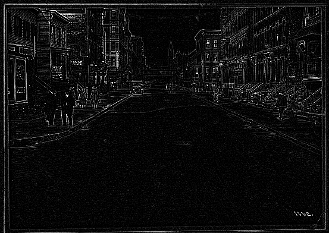

02.09.13
Finding Pictures in Pictures
Over the past month, I’ve been working with imagery from the NYPL’s Milstein Collection. Astute readers may have some guesses why. The images look something like this one:

There are two photos in this picture! They’re on cards set against a brown background. Other pictures in the Milstein gallery have one or three photos, with or without a white border:


To make something akin to OldSF, I’d need to write a program to find and extract each of the photos embedded in these pictures. It’s incredibly easy for our eyes to pick out the embedded photos, but this is deceptive. We’re really good at this sort of thing! Teaching a computer to do makes you realize how non-trivial the problem is.
I started by converting the images to grayscale and running edge detection:

The white lines indicate places where there was an “edge” in the original image. It’s an impressive effect—almost like you hired someone to sketch the image. The details on the stoops are particularly cool:

The interesting bit for us isn’t the lines inside the photo so much as the white box around it. Running an edge detection algorithm brings it into stark relief. There are a number of image processing algorithms to detect lines, for example the Hough Transform or scipy’s probabilistic_hough. I’ve never been able to get these to work, however, and this ultimately proved to be a dead end.
A simple algorithm often works much better than high-powered computer vision algorithms like edge detection and the Hough Transform. In this case, I realized that there was, in fact, a much simpler way to do things.
The images are always on brown paper. So why not find the brown paper and call everything else the photos? To do this, I found the median color in each image, blurred it and called everything within an RMSE of 20 “brown”. I colored the brown pixels black and the non-brown pixels white. This left me with an image like this:
Now this is progress! The rectangles stand out clearly. Now it’s a matter of teaching the computer to find them.
To do this, I used the following algorithm:
- Pick a random white pixel, (x, y) (statistically, this is likely to be in a photo)
- Call this a 1×1 rectangle.
- Extend the rectangle out in all directions, so long as you keep adding new white pixels.
- If this rectangle is larger than 100×100, record it as a photo.
- Color the rectangle black.
- If <90% of the image is black, go back to step 1.
Eventually this should find all the photos. Here are the results on the original photo from the top of the post:
The red rectangles are those found by the algorithm. This has a few nice properties:
- It naturally generalizes to images with 1, 2, 3, 4, etc. photos.
- It still works well when the photos are slightly rotated.
- It works for any background color (lighting conditions vary for each image).
There’s still some tweaking to do, but I’m really happy with how this algorithm has performed! You can find the source code here.
Update: After writing this post, I asked about the approach on the Signal Processing Stack Exchange. This was very educational! The approach laid out in this post was reasonable but could be better expressed using a few old-school computer vision primitives:
- After binarization, morphological operations can be used to remove small features from the image.
- Find connected components in the resulting image. The ones which are large (say, > 150x150) and have a high solidity (ratio of a region's area to that of its convex hull). These are readily found and computed using OpenCV.
In practice, this works well and is much faster than my ad-hoc approach. Check out the final code for details.
Kenny said,
February 10, 2013 at 11:12 pm
That’s pretty clever! It’s pretty rare to come across nice self contained algorithm problems in my day to day work / side projects. So first oldsf, then oldny… how soon until oldworld.org?